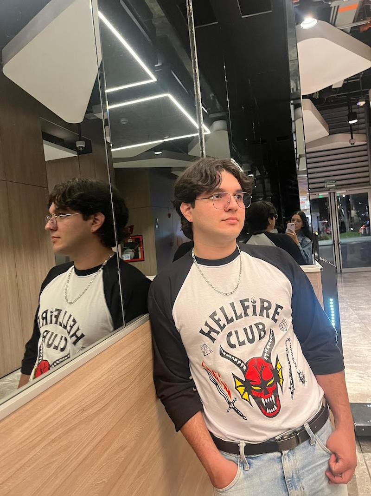

Cristian Felipe Arias Leal
About Me
I'm Cristian, but most people call me Cris. I was born in Floridablanca, Santander, Colombia. I am currently working for ScotiaBank as a Contact Centre Advisor. I live with my family, my wife and son, and I cannot be more happy than now, neither any other thing can makes me happy as my family do. I love reading about politics, economy, history of the world and my country, and social science.

Floridablanca, Santander, Colombia.
Official Flag of Floridablanca
Floridablanca is a city in Santander, Colombia, near Bucaramanga. It is known for its pleasant climate and beautiful landscapes. The city is famous for its delicious traditional obleas. Floridablanca has modern shopping centers, parks, and residential areas. It is a popular place to live and visit because of its quality of life.